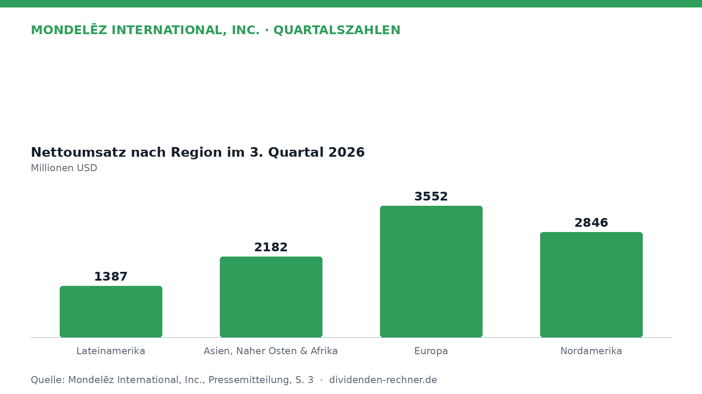
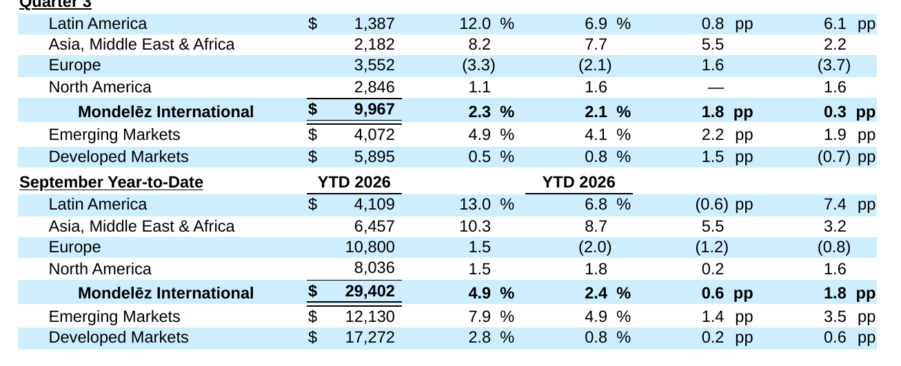

Quartalszahlen

Mondelēz steigert Umsatz und Nettogewinn im dritten Quartal
Mondelēz International legt Zahlen für das dritte Quartal 2026 vor und verzeichnet Zuwächse bei Umsatz und Gewinn.

Kurz gesagt
Umsatz: 9.967 Mio. USD (+2,3 %)
Gewinn: 1.305 Mio. USD (+75,6 %)
- Zahlen: Der Nettoumsatz und der Nettogewinn legen im dritten Quartal zu, wobei der Gewinn besonders stark steigt.
- Ursache: Ein positives organisches Wachstum, höhere Preise sowie günstige Mark-to-Market-Effekte stützen das Ergebnis.
- Risiko: Währungsfaktoren, geopolitische Konflikte und steigende Rohstoffkosten können das operative Geschäft belasten.
Mondelēz wächst operativ und steigert den Quartalsgewinn deutlich
Im dritten Quartal 2026 hat Mondelēz International den Nettoumsatz auf 9.967 Millionen USD gesteigert. Das entspricht einem Plus von 2,3 Prozent im Vergleich zum Vorjahreszeitraum, in dem der Erlös bei 9.744 Millionen USD lag. Auf organischer Basis betrug das Wachstum 2,1 Prozent. Getragen wurde diese Entwicklung von einer soliden Nachfrage und Preisanpassungen in verschiedenen Regionen.

Eigene Darstellung nach Daten aus: Mondelēz International, Inc., Quartalszahlen vom 2026-10-29 · Original.Regionale Unterschiede und Geschäftsentwicklung
Das organische Wachstum zeigte sich je nach Region sehr unterschiedlich. In Lateinamerika legten die Nettoerlöse auf 1.387 Millionen USD zu, was einem Plus von 12,0 Prozent entspricht. Die Region Asien, Naher Osten und Afrika wuchs um 8,2 Prozent auf 2.182 Millionen USD. In Europa sanken die Umsätze dagegen um 3,3 Prozent auf 3.552 Millionen USD, während Nordamerika mit 2.846 Millionen USD ein leichtes Plus von 1,1 Prozent verzeichnete.

Nettoumsatz nach Region und Segment im Q3 2026. Quelle: Mondelēz International, Inc., Quartalszahlen vom 2026-10-29 · Original. Ausschnitt nur zugeschnitten, sonst unverändert.Das Unternehmen treibt neben dem Kerngeschäft auch Zukäufe voran und hat eine Vereinbarung zur Übernahme von Undercover Snacks getroffen, um im Segment für gesündere Snacks zu expandieren. Konzernchef Dirk Van de Put betonte die operative Ausrichtung:
„Wir haben starke Ergebnisse im dritten Quartal erzielt, angetrieben durch ein breites Volumenwachstum und eine robuste Marktperformance.“
— Dirk Van de Put, Chairman und Chief Executive Officer (aus dem Englischen übersetzt)
Ergebnisentwicklung und Margen
Der operative Gewinn kletterte im Berichtszeitraum stark von 744 Millionen USD auf 1.758 Millionen USD, was neben operativen Verbesserungen vor allem auf günstige Mark-to-Market-Effekte bei Rohstoff- und Devisenderivaten zurückzuführen ist. Der Nettogewinn, der den Anteilseignern von Mondelēz zuzurechnen ist, erhöhte sich um 75,6 Prozent auf 1.305 Millionen USD (nach 743 Millionen USD im Vorjahr). Das verwässerte Ergebnis je Aktie (EPS) stieg von 0,57 USD auf 1,02 USD. Auf bereinigter Basis (Adjusted EPS) lag das Ergebnis bei 0,78 USD nach 0,73 USD im Vorjahr, was einem Anstieg von 6,8 Prozent auf berichteter Basis entspricht.
Dividende, Cashflow und Bilanz
Der Free Cash Flow belief sich in den ersten neun Monaten des Jahres 2026 auf 1.659 Millionen USD nach 1.236 Millionen USD im Vorjahreszeitraum. Der operative Cashflow stieg im gleichen Zeitraum von 2.117 Millionen USD auf 2.606 Millionen USD, während die Investitionsausgaben (Capital Expenditures) von 881 Millionen USD auf 947 Millionen USD stiegen. Mondelēz zahlte im bisherigen Jahresverlauf erhebliche Mittel an die Aktionäre zurück: Durch Dividenden und Aktienrückkäufe wurden insgesamt 2,8 Milliarden USD ausgeschüttet. Die Bilanz zeigt zum Stichtag 30. September 2026 kurzfristige Schulden und Kredite in Höhe von 3.653 Millionen USD sowie langfristige Schulden von 16.351 Millionen USD.
Ausblick
Für das Gesamtjahr 2026 peilt das Management ein organisches Umsatzwachstum von mindestens 2 Prozent an. Beim bereinigten Gewinn je Aktie wird ein Zuwachs in einer Spanne von flat bis 5 Prozent auf währungsbereinigter Basis erwartet. Den Free Cash Flow veranschlagt das Unternehmen auf rund 3 Milliarden USD. Als Risiken nennt das Unternehmen anhaltende geopolitische Unsicherheiten, makroökonomische Schwankungen sowie die Volatilität bei Rohstoffen wie Kakao.
Quelle: Mondelēz International, Inc., Quartalszahlen vom 2026-10-29. Rechenwege eigene Berechnung. Keine Anlageberatung.
Hinweis: Dieser Text dient der allgemeinen Information und ist weder Anlage-, Steuer- noch Rechtsberatung. Kapitalanlagen sind mit Risiken verbunden, bis hin zum Totalverlust.